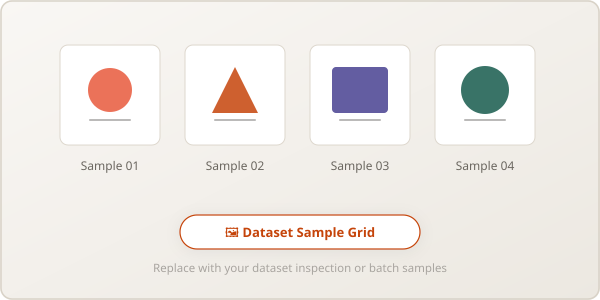
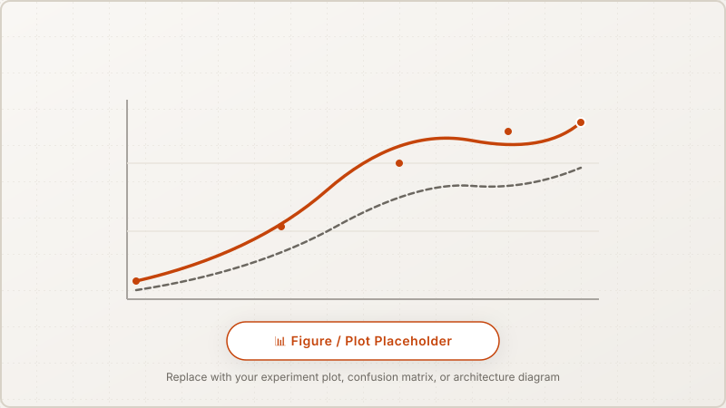

Bài tập sắp diễn ra (Upcoming Deliverable) Upcoming
Phần bài tập mô hình sinh (Generative Models) sẽ được thực hiện tại giai đoạn tiếp theo của môn học. Cấu trúc
báo cáo, bảng benchmark chỉ số và không gian trực quan hóa đã được sẵn sàng cho việc ghi nhận kết quả.
01
Ba trường phái mô hình sinh (Generative Paradigms)
Nghiên cứu và so sánh ba phương pháp tiếp cận cốt lõi trong học sinh sâu (Deep Generative Modeling):
Likelihood-based / Latent Variable
Variational Autoencoder (VAE)
Tối ưu hóa cận dưới Evidence Lower Bound (ELBO) bằng mẹo tái tham số hóa (reparameterization trick). Sinh
mẫu nhanh chóng nhưng ảnh sinh có xu hướng bị mờ (blurry).
Đặc tínhKhông gian latent liên tục
Tốc độ sinh1 bước (Rất nhanh)
Adversarial Game
Generative Adversarial Net (GAN)
Trò chơi đối kháng Minimax giữa Generator và Discriminator. Mẫu sinh sắc nét nhưng huấn luyện nhạy cảm, dễ
gặp hiện tượng mode collapse hoặc mất ổn định gradient.
Đặc tínhMẫu sinh sắc nét
Tốc độ sinh1 bước (Rất nhanh)
Iterative Denoising
Diffusion Model (DDPM)
Quy trình khuếch tán thuận thêm nhiễu Gauss và mạng U-Net học cách khử nhiễu nghịch đảo. Chất lượng ảnh vượt
trội, ổn định cao nhưng đòi hỏi nhiều bước lấy mẫu (sampling steps).
Đặc tínhChất lượng cao nhất
Tốc độ sinhT bước (Chậm hơn)
02
Tiêu chí đánh giá & Đánh đổi chất lượng
So sánh định lượng và định tính giữa 3 mô hình sinh trên tập dữ liệu ảnh chuẩn:
Mô hình
Kiến trúc mạng
Số tham số
FID Score ↓ (Dự kiến)
Thời gian sinh 1 ảnh
Độ ổn định huấn luyện
Convolutional VAE
CNN Encoder-Decoder
[Sẽ cập nhật]
—
< 5 ms
Cao (Hội tụ mượt)
DCGAN / WGAN-GP
Conv2D / TransposeConv2D
[Sẽ cập nhật]
—
< 5 ms
Trung bình (Nhạy cảm LR)
DDPM (Diffusion)
U-Net + Time Embedding
[Sẽ cập nhật]
—
~ 200 ms (50 steps)
Rất cao (Loss ổn định)

Hình 4.1: Vị trí placeholder hiển thị lưới mẫu ảnh sinh (Generated Samples Grid) từ VAE, GAN và
Diffusion Model.
03
Khảo sát không gian tiềm ẩn (Latent Space)
Thực hiện phép nội suy tuyến tính (Spherical Linear Interpolation - Slerp) giữa các vector tiềm ẩn để kiểm tra
tính mượt mà của biểu diễn nội tại và khả năng khái quát hóa của bộ sinh.

Hình 4.2: Minh họa quá trình nội suy latent space chuyển dần từ đối tượng A sang đối tượng B.